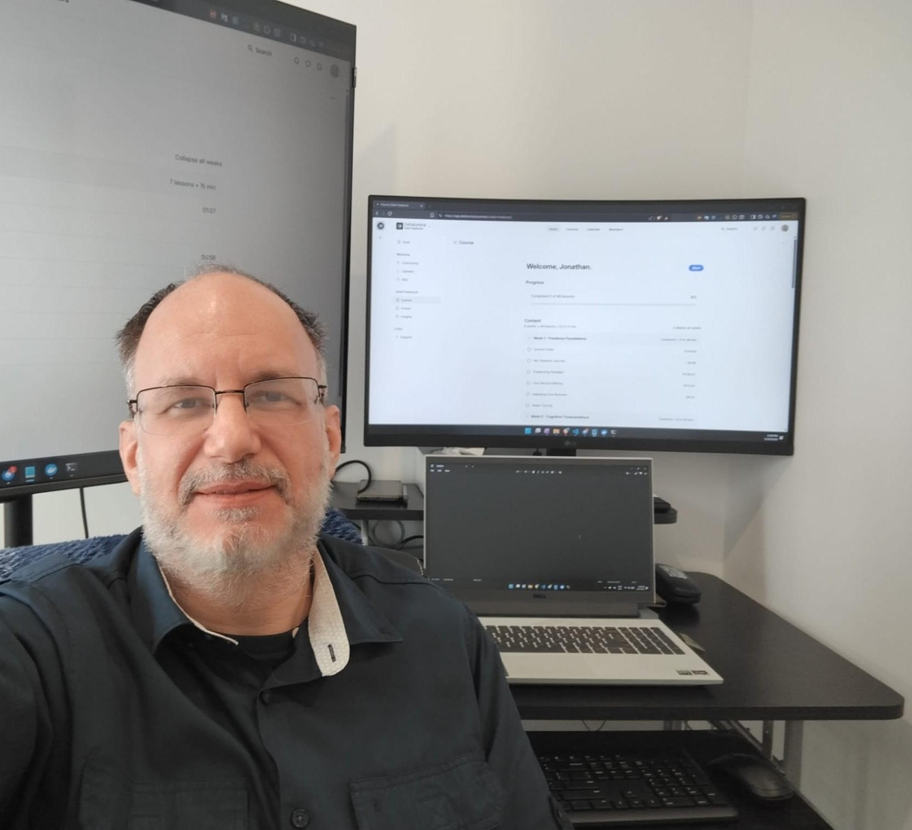

Freelance Software & AI Engineer | .NET · Azure · Python
Your business outgrew off-the-shelf software. I build what comes next.
I replace manual workflows with production-grade automation, enhanced by AI where it genuinely helps.
For CTOs, founders, and operations leaders at SMBs (20–500 employees)
Book a Free 30-Min Strategy Call See How I've Solved This Before

Top Rated Plus | Top 3% $500K+ Delivered 100% Job Success 25+ Years Experience 13+ Year Client
"Your work has completely changed my life." — Scot Nichols, long-term client
Who I help
If your team is still stitching together spreadsheets, disconnected SaaS products, and manual workarounds to run core operations, you're who I build for.
SMBs and mid-market companies (20–500 employees) in industries where the workflow is the product. Businesses whose operations are too interconnected, too specific, or too mission-critical for any single off-the-shelf tool.
-
Is your field team drowning in paperwork?
Technicians losing hours to manual documentation, missed invoices, and billing gaps. I automate the entire document-to-billing flow.
Automotive · Field Services
-
Is your research team still collecting data by hand?
Manual data collection from dozens of sources eating your team's time. I automate ingestion into a single audit-ready dataset.
Environmental · Government
-
Is revenue leaking through process gaps?
Billing gaps, manual reconciliation, and disconnected workflows costing real money. I build platforms that close the loop automatically.
Professional Services
-
Are your operations too complex to coordinate?
Multiple teams, tools, and systems that should talk to each other but don't. I build the integration layer that connects them all.
Logistics · Field Operations
How I help
-
Custom Platform Build
Replace Google Sheets, disconnected tools, and manual data entry with a single platform that handles your entire workflow: capture, processing, reporting, and billing. Typical engagements: 3–12 months.
10–20+ hours/week of manual work eliminated · Scalable without adding headcount
-
AI Integration
Add intelligent document processing, knowledge assistants, or workflow automation to existing systems. LLM pipelines, RAG systems, and AI agents, integrated where AI genuinely solves the problem. I'll tell you honestly when a simpler solution delivers better results. Typical engagements: 1–6 months.
Intelligent document processing · Knowledge assistants · Workflow automation
-
Ongoing Technical Partnership
Architecture, development, and evolution of your platform as your business grows. Cloud deployments, data pipelines, and infrastructure across Azure, GCP, and AWS. Many clients start with a build and stay for years, including a 13+ year ongoing relationship.
Long-term collaboration · Architecture that scales · Cloud & data engineering
Why me instead of an agency or offshore team
| Agency | Offshore team | Generalist | Working with me | |
|---|---|---|---|---|
| Architecture decisions | Made by someone you may never meet | Often missing entirely | Surface-level | Made by the same person writing the code |
| Business context | Filtered through account managers | Lost in translation | Rarely considered | Built into every technical decision |
| Continuity | Team rotates | High turnover | Project-to-project | 13+ year client relationship (ongoing) |
| AI judgment | Bolted on as a line item | Template-driven | Added to look current | Integrated only where it genuinely helps |
| Accountability | Diffused across layers | Unclear ownership | Limited scope | Direct, single-owner responsibility |
Featured case studies
-
Automotive Documentation Platform
Problem: Manual Google Sheets process causing missed invoices and hours of admin overhead as the business scaled.
Result: Eliminated missed billing. Technicians stopped typing. Auto-fill and auto-populate replaced manual entry. Deployed as a scalable multi-tenant SaaS product.
ASP.NET Core · Azure · QuickBooks API
-
Climate Data Integration Pipeline
Problem: Manual collection from 120+ government data sources with unique APIs, formats, and authentication. No ETL tool could handle the variation.
Result: Fully automated pipeline with scheduling, error handling, and unified geospatial dataset.
Python · GCP · Apache Airflow · PostGIS
-
Diagnostic Visualization Platform
Problem: Off-the-shelf diagnostic tools couldn't visualize multi-cylinder engine performance in real time.
Result: Enabled fault identification previously impossible with off-the-shelf tools. Real-time multi-cylinder analysis used directly by field technicians.
.NET WPF · Azure Virtual Desktop
-
Real-Time File Monitoring System
Problem: No existing solution could handle event-driven monitoring of 100,000+ files with self-healing recovery across Azure File Shares.
Result: Reliable processing at sub-second latency with self-healing error recovery handling thousands of file events per minute.
.NET 9 · Azure Cosmos DB · Docker · Azure Functions
What clients say
How I work
-
1. Discovery
A real conversation about your problem, not just your feature list. I ask the questions that surface actual requirements, constraints, and budget realities.
-
2. Architecture & Planning
I design a solution that fits your business model, growth plans, and budget. You'll understand the "why" behind every technical decision before we build.
-
3. Build & Iterate
Clean, production-grade code with regular check-ins. You stay informed and involved. No disappearing for weeks with nothing to show.
-
4. Ongoing Partnership
Documentation, knowledge transfer, and continued development. Most clients start with one project and never look back. My longest partnership is 13+ years.
Most engagements start with a single 30-minute conversation. Book yours →
Common questions
Is one freelancer really enough for our project?
Yes, if it's the right one. You get a senior engineer who owns architecture, development, cloud infrastructure, and AI integration across the full stack. No handoffs, no communication overhead, no "let me check with the team." My longest client relationship is 13+ years and still active. I work 25–30 focused hours per week and don't take on more than I can deliver well.
How do I know you won't disappear mid-project?
49+ completed contracts, 100% Job Success on Upwork, 7+ repeat clients, and a 13-year active partnership. I scope work in phases so you always have working code, full documentation, and a clean handoff at every milestone. In 11,000+ billable hours, I've never left a client stranded.
Is custom software worth the investment vs. off-the-shelf?
The businesses I work with have typically tried 2–3 off-the-shelf options before reaching out. Custom-built software is designed around how your business actually operates, not how a vendor thinks it should. Discovery sprints start at $3,000–$6,000, so you can validate the approach before committing to a full build.
Tell me what's slowing your team down.
I'll give you a straight answer on what to build and what not to. Free 30-minute strategy call. No pitch deck. No obligations.